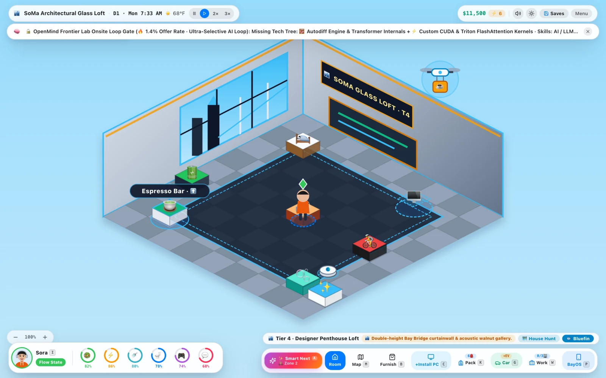
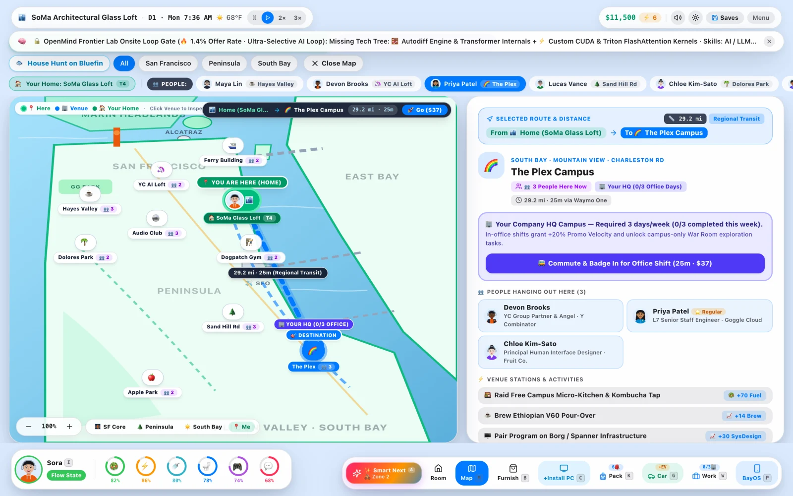
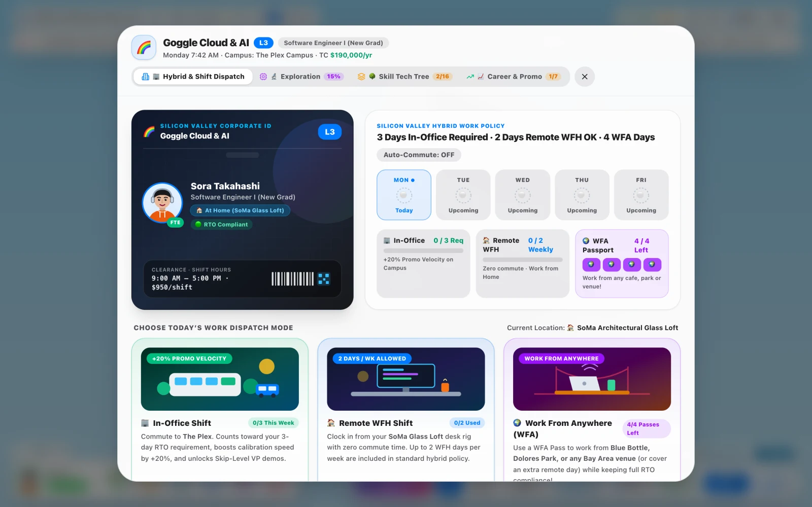
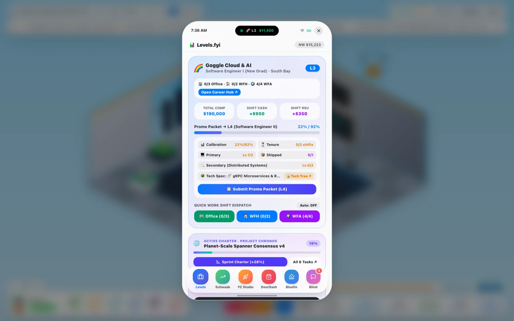

Bay Life
A Sims-style life sim about being a software engineer in the Bay Area, inspired by Lagos Life. You live in an isometric apartment, grind L3→L8 promos (or drop out to pitch Sand Hill VCs), survive PG&E shutoffs, take Waymos around SF and South Bay, and check Levels.fyi, Blind, and Bluefin on your in-game iPhone.
🌉 2.5D Isometric Sandbox
💻 L3→L8 Career & YC Studio
🗺️ 9 Bay Area Venues & Waymo
📱 BayOS iPhone (Levels · Schwab · Bluefin)




ACTUAL GAMEPLAY · SWIPE OR CLICK TO EXPLORE
01 / 04